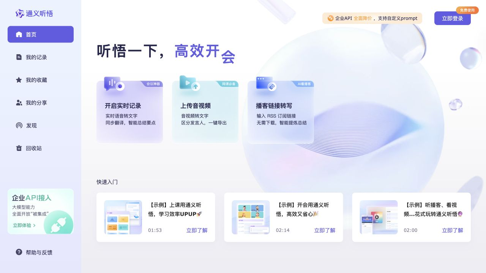
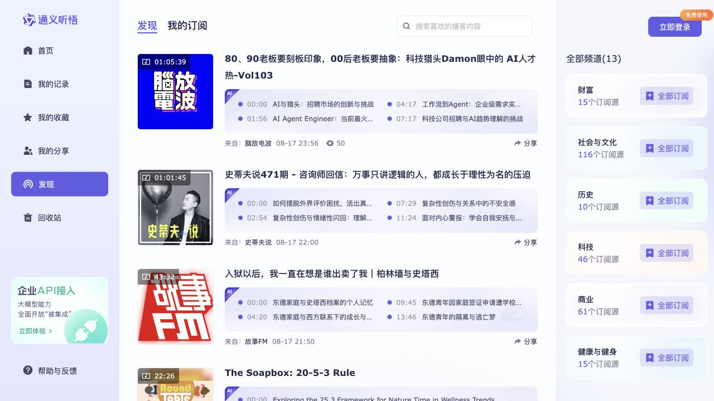
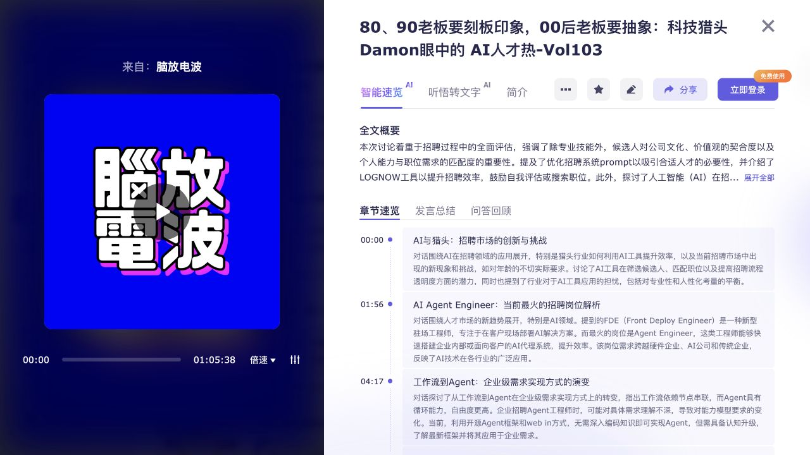

产品主线
【已确认】 Web 首页把入口压缩为实时记录、上传音视频和播客链接转写三类任务；公开详情把播放器、逐字稿和 AI 理解产物放在同一记录对象下。证据：E-J-002、E-J-004。
阶段 A · 用户旅程 · v1
【已确认】 本轮读取了未登录态的“我的记录”、公开首页、公开发现页，以及一条公开播客记录详情。未登录、未上传、未开启实时记录、未播放、未分享、未收藏、未订阅、未购买、未删除。
【未知】 私有记录的创建表单、任务队列、处理状态、失败与重试、扣费、编辑、导出、回收站恢复，以及真实用户确认门均不可访问，因此本报告不能代表完整生产旅程。
【未知】 `ego-browser` 命令与其安装参考在本机不可用，本轮降级使用 Codex 内置浏览器完成同等只读 DOM 与截图取证。该工具仅是外部取证手段，不属于通义听悟产品架构。
【已确认】 Web 首页把入口压缩为实时记录、上传音视频和播客链接转写三类任务；公开详情把播放器、逐字稿和 AI 理解产物放在同一记录对象下。证据：E-J-002、E-J-004。
【合理推断】 产品不是单一 ASR 工具，而是“把长音视频变成可定位、可阅读、可复用的知识对象”的工作台：时间戳把媒体、逐字稿和摘要建立可见关联。证据：E-J-003、E-J-004、E-O-001。
【未知】 未获得一条从用户提交到任务完成的真实运行样本，不能确认各 AI 产物是并行还是串行生成、状态如何写回、出错如何恢复，也不能识别真实 Agent 数量或边界。
| 阶段 | 用户目标 | 用户动作 | 页面反馈 | 系统结果 | 问题/阻力 | 证据 |
|---|---|---|---|---|---|---|
| 入口 | 查看自己的记录 | 打开指定 URL | 提示“登录后可查看记录内容”并提供“立即登录” | 未展示私有记录 | 登录墙阻断后续真实任务取证 | E-J-001 · 【已确认】 |
| 任务选择 | 理解产品可处理什么 | 查看公开首页 | 展示实时记录、上传音视频、播客链接转写三个入口及价值说明 | 无任务创建；仅可见入口 | 参数、费用和预期产物未在首屏同时展开 | E-J-002 · 【已确认】 |
| 内容发现 | 先看现成结果 | 进入发现页 | 可搜索、浏览频道和播客卡片；卡片包含时长、章节时间点与摘要标题 | 公开 AI 摘要结果可预览 | 卡片摘要准确性无法从列表独立判断 | E-J-003 · 【已确认】 |
| 结果消费 | 快速理解单条长音频 | 打开公开记录详情 | 播放器与全文概要、章节、发言总结、问答、逐字稿同屏组织 | 可见多种 AI 派生产物与发言人时间戳 | 未执行编辑、导出、分享；结果可操作性未闭环 | E-J-004 · 【已确认】 |
| 可信度判断 | 判断 AI 结果是否可靠 | 浏览详情内容 | 页面底部提供 AI 准确性与完整性免责声明 | 有风险披露，但没有可见的逐结论溯源或置信度 | 免责声明不在首屏；用户可能先消费结论后看到提示 | E-J-005 · 【已确认】；影响为【合理推断】 |
【已确认】 未登录用户仍可从首页进入发现页，并查看公开记录的 AI 摘要和逐字稿。E-J-002 至 E-J-004。
【已确认】 访问“我的记录”会被登录门拦截。未触发登录，因此登录成功后的返回位置与状态恢复为【未知】。E-J-001。
【未知】 未获得用户修改发言人、转写文本、摘要、Prompt 或标题的真实样本；不能判断修改是否触发重新生成或版本保留。
【未知】 未出现上传失败、转写失败、摘要失败、余额不足或安全拦截；重试入口、幂等和重复计费均未验证。
【未知】 未启动实时记录或异步任务，无法观察暂停、取消、关闭页面后恢复及后台是否继续处理。
【已确认】 公开详情中已有可读产物；【未知】 这不证明原任务经历了资产、状态、质量、确认和交接五重完成门。
| 观察 | 判断 | 机会 | 证据 |
|---|---|---|---|
| 未登录用户在“我的记录”立即遇到登录门 | 【合理推断】 对已有明确查看意图的用户是必要权限边界，但对首次评估产品的人会形成体验断点。 | 【建议设计】 在登录门旁提供一条“查看公开样例”的主路径，并说明登录后保留的对象与隐私边界。 | E-J-001、E-J-003 |
| 首页三种入口清晰，但未在首屏同时展示参数、预计耗时、费用和产物差异 | 【合理推断】 用户知道“能做什么”，仍不容易在提交前形成成本与结果预期。 | 【建议设计】 入口展开后在同一确认门展示输入限制、预计处理时间、计费项和默认生成模块。 | E-J-002、E-O-002、E-O-003 |
| 详情页将播放器、章节、总结与逐字稿放在同一记录下 | 【合理推断】 时间戳是跨产物的关键定位锚点，降低用户从摘要回到原始语境的成本。 | 【建议设计】 让每个摘要句或问答结论直接指向一段原始音频与逐字稿，并显示编辑/再生成后的版本。 | E-J-003、E-J-004 |
| 免责声明位于详情内容之后 | 【合理推断】 用户可能先采纳结论，再看到准确性提示；重要决策场景存在过度信任风险。 | 【建议设计】 在每类 AI 产物标题旁提供固定风险标识、来源覆盖率和可追溯入口。 | E-J-005 |
提交前预期不完整。 【建议设计】 在任务确认门显式列出默认 AI 模块、可能叠加的计费、预计耗时和输出清单，减少“只想转写却生成多项摘要”的预期偏差。
AI 结论的局部可验证性不足。 【建议设计】 为摘要、章节、问答逐项绑定时间戳和原文片段，并记录用户修改后的来源版本。
登录墙与公开样例之间的引导弱。 【建议设计】 把公开样例作为登录前的正式体验分支，并在样例结束处说明登录后可创建、管理和导出的差异。



【已确认】 阿里云官方资料将通义听悟描述为建立在语音识别、翻译和说话人分离之上的音视频理解服务，公开能力包括摘要、章节、发言总结、待办、问答、关键词等。E-O-001
【已确认】 官方规格说明实时与离线模式、支持格式/语种/时长等限制；这些只证明 API 服务能力，不证明本轮网页任务已使用。E-O-002
【已确认】 官方计费由语音处理、大模型、多模态和翻译构成，多个大模型功能或多个 Prompt 可能叠加计费；当前个人网页入口的实际计费提示未取证。E-O-003
【已确认】 API 自定义 Prompt 会把转写结果作为模型输入，并公开模型选项与输入截断规则；这不等于个人 Web 端已经向用户暴露同一能力。E-O-004
【已确认】 已完成未登录公开消费链的时间线、页面/产物交叉核对、证据编号、三泳道图和体验问题。
【未知】 私有任务从输入到完成的主流程、修改、失败、中断和恢复仅能保留为缺口，因此阶段 A 对“完整生产旅程”的质量门尚未通过。
【建议设计】 进入阶段 B 前，至少补充一条可访问的真实记录：创建入口、输入参数、任务状态、最终产物、一次修改或失败样本、费用提示与导出/分享结果。获得这些证据后，才适合识别实际 Agent 职能与 I/O 契约。